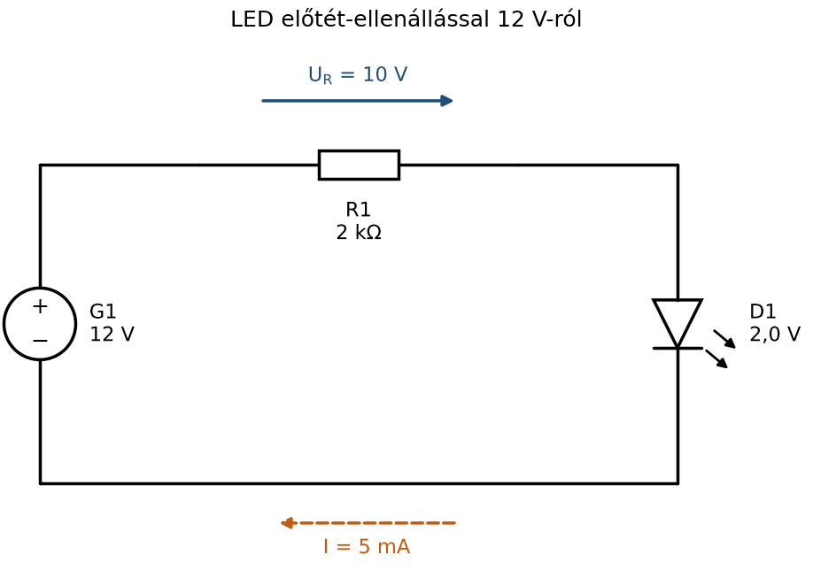
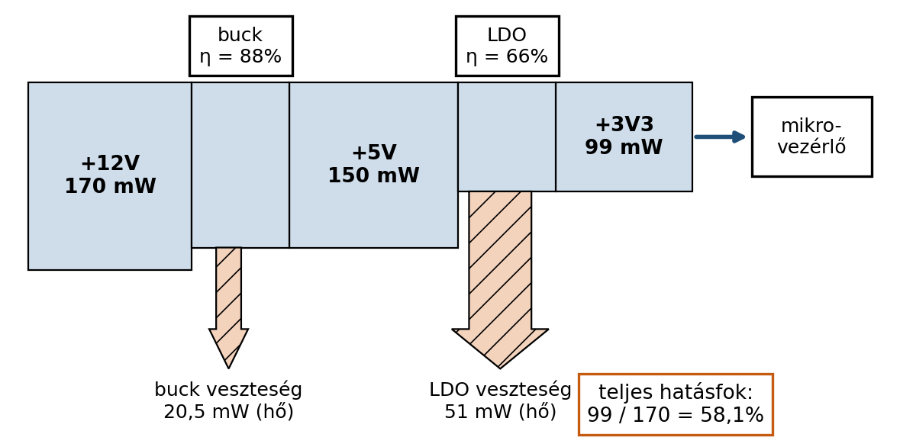
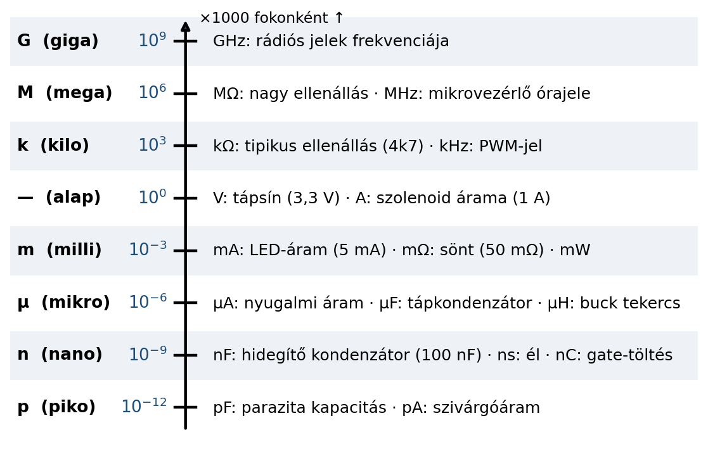

Mire leszel képes az alfejezet végén?
elkit.units modullal ellenőrzöd őket.A szenzormodult egy kis, 12 V-os, 7 Ah-s akkumulátorról is szeretnéd járatni. Meddig bírja? Miért meleg a 3,3 V-os szabályzó, pedig a mikrovezérlő keveset fogyaszt? Az adatlapok mW, µA, nF és kΩ mennyiségeket írnak: ha egy előtagot félreolvasol, ezerszeres hiba lesz belőle.
Ez az alfejezet három dolgot ad: a teljesítmény és az energia fogalmát, a hatásfokot, és a mértékegységek biztos kezelését.
A Töltés, áram és a zárt áramkör alfejezetben láttad, hogy a fogyasztó nem áramot fogyaszt. A Feszültség, potenciál és a föld alfejezetben pedig azt, hogy a feszültség az egységnyi töltésre jutó energia. A kettő együtt megmondja, milyen gyorsan áramlik az energia: másodpercenként hány coulomb halad át (áram), és egy coulomb hány joule-t ad le (feszültség).
Vegyünk egy 12 V-os forrásról táplált LED-et előtét-ellenállással (a LED kis feszültséggel világít, az ellenállás veszi fel a fölösleget; a méretezést a következő fejezetek adják). A LED-en 2,0 V (mintaadat), az ellenálláson a maradék 10 V esik, a körben 5 mA folyik.

Gondolkodj előre! Ha ugyanennél a feszültségnél az áramot megduplázod, mi történik a forrás által leadott teljesítménnyel, és mennyi energia fogy el egy óra alatt?
Mivel a teljesítmény az áram és a feszültség szorzata, dupla áramnál dupla lesz, és egy óra alatt kétszer annyi energia fogy.
Definíció. A teljesítmény (jele ) az egységnyi idő alatt átadott energia, . Mértékegysége a watt (W), .
Egy elemen, amelyen feszültség esik és áram folyik, idő alatt töltés halad át, és minden coulomb a feszültség számértékének megfelelő joule-t adja át: . Idővel osztva:
Ez egyenáramra és pillanatértékekre () érvényes. A váltakozó áramú esetet a Váltakozó áramú hálózatszámítás és teljesítmény alfejezet adja. Dimenzióellenőrzés: . Rendben.
Hasznos rövidítés: .
Definíció. A passzív (fogyasztói) előjelkonvenció szerint egy elemen a feszültség- és az áramnyíl azonos irányú, és a a felvett teljesítmény. Ha , az elem energiát vesz fel; ha , energiát ad le.
A LED-körben a forrásnál is vegyük azonos irányúnak a két nyilat: a feszültségnyíl a + saroktól a − felé mutat, tehát az áram referenciairánya a forráson belül is + → −. A valódi áram a forrás belsejében éppen fordítva, a − saroktól a + felé halad, ezért mA, és W mW: a forrás lead 60 mW-ot. Az ellenállás mW-ot, a LED mW-ot vesz fel.
Az energia nem keletkezik és nem vész el, ezért egy zárt kör minden elemére az előjeles teljesítmények összege nulla:
Itt . Ezt a teljesítménymérleget minden számítás ellenőrzésére használhatod: ha nem jön ki, valahol előjel- vagy számítási hiba van.
Továbbvitt eredmény. Passzív előjelkonvencióban a felvett teljesítmény (forrásnál negatív), és egy hálózat összes elemére . Erre épül az Ellenállás és az Ohm-törvény, a Teljesítménymérleg, lineáris szabályzó és LDO és a Követelményektől a blokkdiagramig.
Állandó teljesítménynél a felhasznált energia . SI-egysége a joule (J): . A gyakorlatban a wattóra kényelmesebb: J, MJ.
A telepek és akkumulátorok adatlapján az amperóra (Ah, mAh) szerepel. Vigyázz: ez töltés, nem energia! C. Energiává a feszültséggel kell szorozni:
Itt a névleges (átlagos) feszültség, a kapacitás amperórában; az eredmény Wh. Ez közelítés: a feszültség kisütés közben csökken, a kapacitás pedig függ az áramtól, a hőmérséklettől és az akkumulátor korától. A hozzávetőleges üzemidő , és a valóságban ennél rövidebb.
Egy átalakító (tápegység, motor, erősítő) a felvett teljesítménynek csak egy részét adja tovább hasznos formában.
Definíció. A hatásfok , ahol a hasznos kimenő, a felvett teljesítmény; , gyakran százalékban adjuk meg. A különbség a veszteség: .
A veszteség szinte mindig hő: az alkatrész melegszik, és a hőt el kell vezetni. Egymás után kötött fokozatoknál a hatásfokok szorzódnak: (nem összeadódnak).

Továbbvitt eredmény. A hatásfok , a veszteség hővé alakul, a fokozatok hatásfokai szorzódnak. Erre épül a Teljesítménymérleg, lineáris szabályzó és LDO, a Hatásfok, veszteségek, alkatrészválasztás és kapcsolóüzemű zaj és a Hőtervezés és vezetőmelegedés.
Az SI (nemzetközi mértékegységrendszer) alapegységei közül nekünk a másodperc (s), az amper (A), a kelvin (K), a méter (m) és a kilogramm (kg) kell; a többi egység ezekből származik:
| Mennyiség | Egység | Összefüggés |
|---|---|---|
| töltés | coulomb (C) | |
| feszültség | volt (V) | |
| teljesítmény | watt (W) | |
| frekvencia | hertz (Hz) | |
| ellenállás | ohm (Ω) | (3. fejezet) |
| kapacitás | farad (F) | (később) |
| induktivitás | henry (H) | (később) |
A nagyon kis és nagyon nagy számokat előtaggal (prefixummal) írjuk:
| Előtag | Jel | Szorzó |
|---|---|---|
| giga | G | |
| mega | M | |
| kilo | k | |
| milli | m | |
| mikro | µ | |
| nano | n | |
| piko | p |

A normálalak egyetlen nem nulla jegyet hagy a tizedesvessző előtt (). A mérnöki alak ennél kényelmesebb: a kitevő mindig 3 többszöröse, a szám 1 és 1000 között van, és a kitevő egy előtagnak felel meg: µF. Ügyelj a kis- és nagybetűre: mΩ és MΩ között -szeres a különbség.
A kapcsolási rajzokon és az alkatrészjegyzékben tömörített jelölés is szokás, ahol az előtag a tizedesvessző helyére kerül: 4k7 kΩ, 2n2 nF, R47 Ω. Az eredményeket 3 értékes jegyre kerekítjük; a köztes számolásban tartsd meg a pontosabb értéket.
A könyv elkit.units modulja ugyanezt tudja: a
parse a „4k7” vagy „100n” alakú szöveget alapegységű
számmá, az fmt a számot előtagos szöveggé alakítja. A
series az értékeket összeadja, a parallel a
„párhuzamos eredőt” számolja ki; hogy ez mit jelent, a Kirchhoff törvényei, soros és párhuzamos kapcsolás
alfejezet mondja el.
Továbbvitt eredmény. Az elkit.units a
mérnöki jelölést (parse) és az előtagos kiírást
(fmt) adja; minden későbbi, kódot tartalmazó alfejezet ezt
használja, elsőként A csomóponti potenciálok
módszere és az MNA-megoldó.
A modul buck átalakítója (kapcsolóüzemű feszültségcsökkentő) 12 V-ból 5 V-ot állít elő hatásfokkal (mintaadat), a 5 V-ból az LDO (lineáris szabályzó) 3,3 V-ot. A mikrovezérlő tipikusan 30 mA-t vesz fel. Mekkora teljesítmény kell a 12 V-os bemeneten, ha csak a mikrovezérlőt nézzük?
Az akkumulátor: Wh kJ. Ha csak ez a teher volna rajta, az ideális üzemidő óra, kb. 20 nap. Józanész-ellenőrzés: óra, ugyanaz. A valóságban a többi fogyasztó és a veszteségek miatt rövidebb.
from elkit import units
from elkit import szenzormodul as sm
# mérnöki jelölés beolvasása és kiírása
for s in ["4k7", "2n2", "R47", "100n", "150uA"]:
print(f"{s:6s} -> {units.parse(s):.3g}")
print(units.fmt(47e-6, "F"), "|", units.fmt(4700, "Ω", decimal_comma=True))
print("soros:", units.fmt(units.series(1e3, 2.2e3), "Ω"),
"| párhuzamos:", units.fmt(units.parallel(10e3, 10e3), "Ω"))4k7 -> 4.7e+03
2n2 -> 2.2e-09
R47 -> 0.47
100n -> 1e-07
150uA -> 0.00015
47 µF | 4,7 kΩ
soros: 3.2 kΩ | párhuzamos: 5 kΩ# teljesítménymérleg a LED-körben (passzív előjelkonvenció)
U, U_LED, I = sm.U_BE, sm.LED_U_F, sm.LED_I
P = {"G1": U * -I, "R1": (U - U_LED) * I, "D1": U_LED * I}
print(" ".join(f"{n}: {units.fmt(p, 'W')}" for n, p in P.items()))
print(f"összeg: {round(sum(P.values()), 12)} W")
# a szenzormodul mikrovezérlős ága
eta_buck = 0.88
P_ki = sm.U_3V3 * sm.I_MCU_TIP
P_5 = sm.U_5V * sm.I_MCU_TIP
P_12 = P_5 / eta_buck
print(f"MCU {units.fmt(P_ki, 'W')}, 5 V-on {units.fmt(P_5, 'W')}, "
f"12 V-on {units.fmt(P_12, 'W')}")
print(f"LDO hatásfok {P_ki / P_5:.1%}, összes {P_ki / P_12:.1%}, "
f"áram {units.fmt(P_12 / sm.U_BE, 'A')}")
W_Wh = 12 * 7
print(f"energia {W_Wh} Wh = {units.fmt(W_Wh * 3600, 'J')}, "
f"ideális üzemidő {W_Wh / P_12:.0f} óra")G1: -60 mW R1: 50 mW D1: 10 mW
összeg: 0.0 W
MCU 99 mW, 5 V-on 150 mW, 12 V-on 170 mW
LDO hatásfok 66.0%, összes 58.1%, áram 14.2 mA
energia 84 Wh = 302 kJ, ideális üzemidő 493 óraAz interaktív ábrán a forrás feszültségét, a kör áramát és az üzemidőt állíthatod. A LED feszültsége állandó 2,0 V, a maradék az ellenállásra jut.
A teljesítmény a másodpercenkénti energiaátadás:
,
1 W = 1 J/s. Passzív előjelkonvencióban a felvett teljesítmény pozitív,
a forrásé negatív; egy zárt hálózat összes elemére
,
ez a teljesítménymérleg a számítás ellenőrzése. Az energia állandó
teljesítménynél
;
1 Wh = 3600 J. A telep mAh-ja töltés, energiává a névleges feszültséggel
való szorzás teszi (közelítés). A hatásfok
,
a veszteség hővé alakul, a fokozatok hatásfokai szorzódnak. A
szenzormodul mikrovezérlős ágán a 99 mW hasznos teljesítményhez kb. 170
mW kell a 12 V-os bemeneten. Az SI-előtagok p-től G-ig ezres lépésekben
követik egymást; a mérnöki alak (4k7, 100 nF) és az
elkit.units modul segíti a biztos számolást.
1. feladat. W. 1 órára J Wh.
2. feladat. 4700 Ω; F; 0,47 Ω; A A. 33 µF; 2,5 mW.
3. feladat. Forrás: mW. Ellenállás: mW. LED: mW. Összeg: .
4. feladat. Wh. A kimeneten Wh. W, tehát óra. Ah-ban 5 V-on: Ah, nem 10 Ah.
5. feladat. Egyetlen LDO: mW, mW, veszteség 696 mW, %. Buck + LDO: az LDO 5 V-ról mW-ot vesz fel, a buck bemenete mW, %. A kapcsolóüzemű előfokozat nagyjából megfelezi a bemenő teljesítményt, és a melegedés nagy részét megszünteti.
6. feladat. óra, kb. 35 nap. Energia Wh. Becslés: az elem feszültsége csökken, a kapacitás áram- és hőmérsékletfüggő.
7. feladat.
def lanc(P_terheles, hatasfokok):
"""Bemenő teljesítmény és teljes hatásfok; a lista a bemenet felől a terhelés felé."""
P = P_terheles
for eta in reversed(hatasfokok):
P /= eta
return P, P_terheles / P
P_t = sm.U_3V3 * sm.I_MCU_MAX
eta_ldo = sm.U_3V3 / sm.U_5V
P_be, eta = lanc(P_t, [0.88, eta_ldo])
print(f"terhelés {units.fmt(P_t, 'W')}, bemenet {units.fmt(P_be, 'W')}, "
f"hatásfok {eta:.1%}")terhelés 264 mW, bemenet 455 mW, hatásfok 58.1%8. feladat. (a) Egy harmadik, figyelmen kívül hagyott fogyasztó (pl. a vezeték ellenállása vagy a műszer): mérd a feszültségét és az áramát. (b) Műszerpontosság: néhány százalék az áramon és feszültségen együtt több milliwattot adhat; ismételj pontosabb méréssel. (c) Nem egyszerre mért értékek, miközben az áram ingadozott: mérj egyidejűleg vagy átlagolj. (d) Előjel- vagy előtaghiba: ellenőrizd a nyilakat és az egységeket.